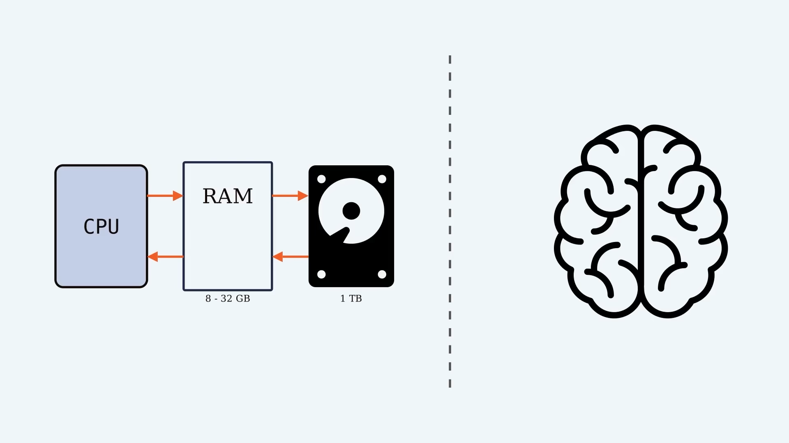
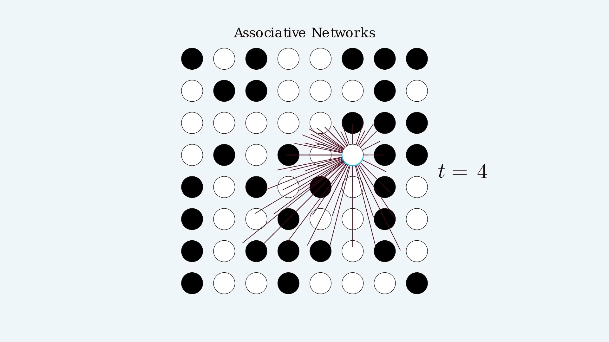
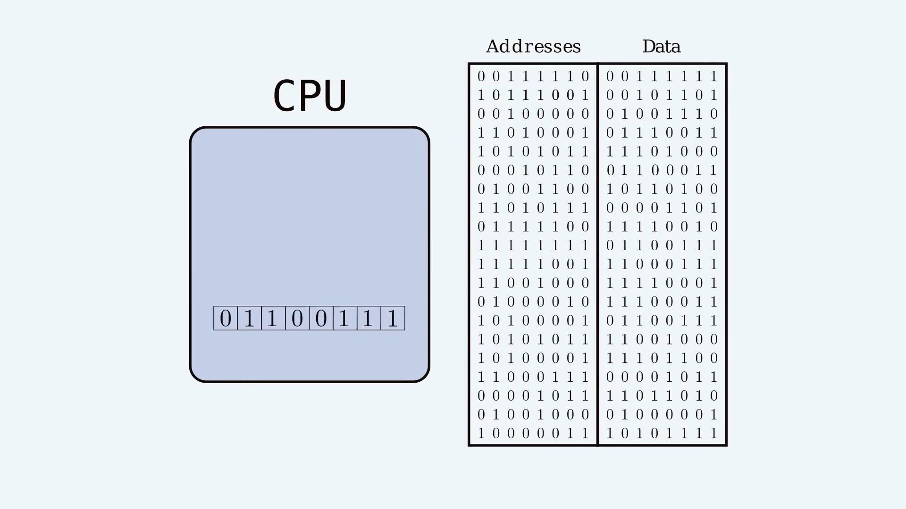
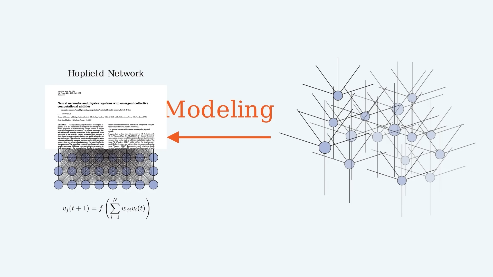
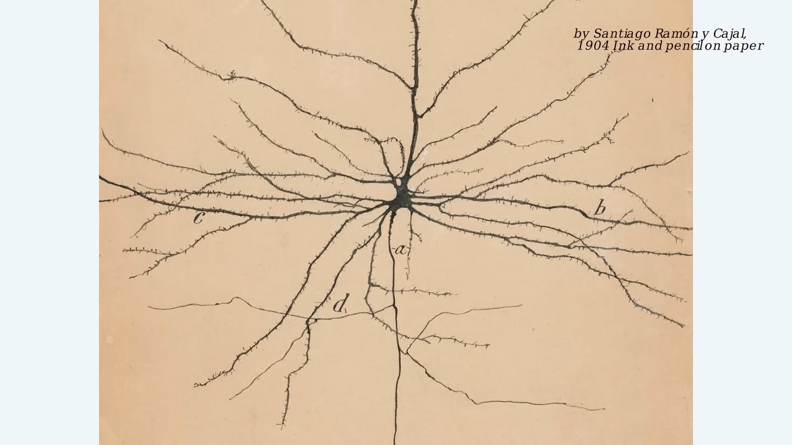
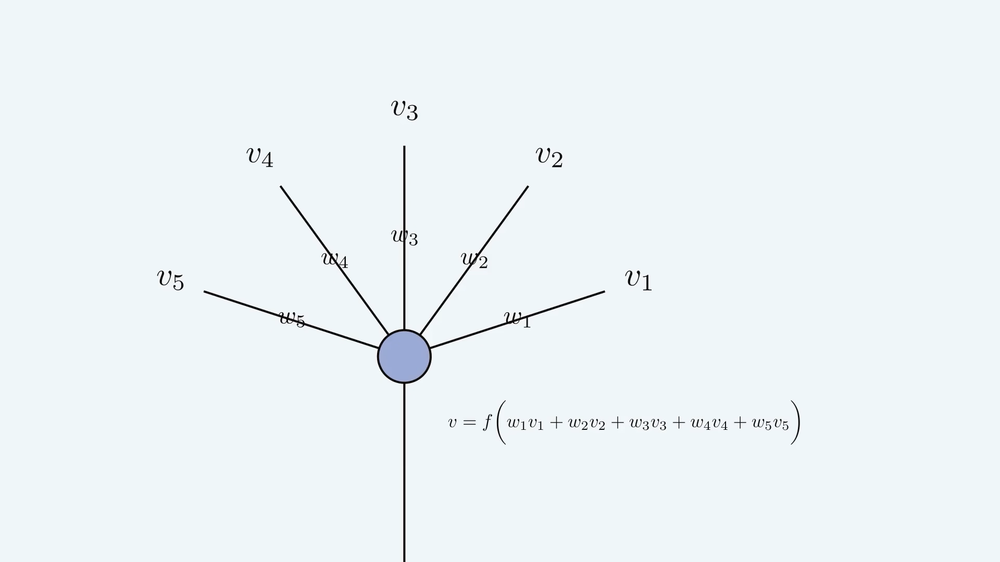
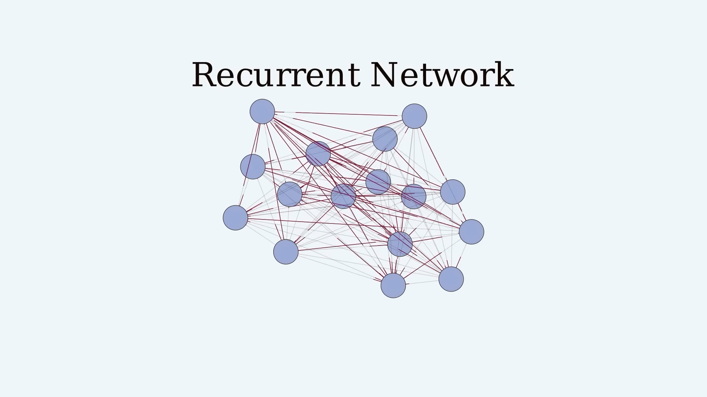
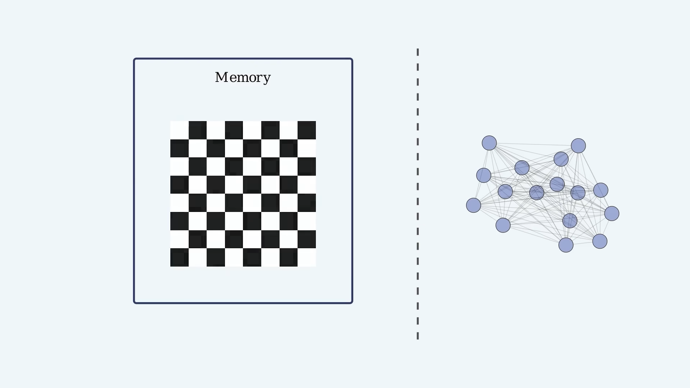
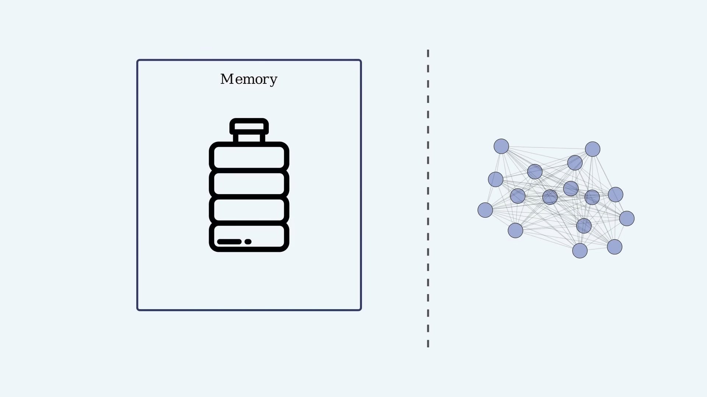
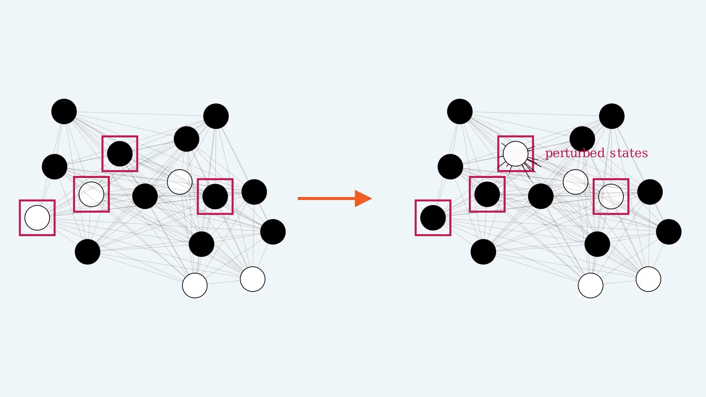

This video came across in my youtube recommendation, the title is “How are memories stored in neural networks? | The Hopfield Network #SoME2” by Layerwise Lectures.
This channel is interestingly has only 1 video, bio:
Reality comes in layers - layers of abstraction. This channels tries to uncover them to gain insights on neuroscience and machine learning.
You’ll find how it interesting, below is my notes.
Where is your memory?
- The Random Access Memory (RAM) of a nowaday typical computer is 8-32GB. That’s the part directly interact with CPU.
- Aside from that, you may have hard disk with terabyte or so memory.
- How about you ~ or your brain? Can we mearsure in bytes?
- But the question should be asked in the first place is: Where is it?
- Because memory in computer have physical location, to access a piece of data in RAM you have to know the the binary address associated with that location.
- For the CPU, the matter comes down to just turning on the right wires to retreive the bits in desired location.

- Imagine another kind of memory. Instead of specifying where of a memory, it’s a binary address, how about we could specify what, it’s content.
- Our memory, if we provide a incomplete version of memory, it’s just sort of autocompletes. With the right software, computer can also do this, but it’s not how computer memory work on the basic level.
- The point of this video is to convince you that autocompleting memories, also know as associative memory, is kind of natural behaviour of networks of neurons.
- It’ll become clear that it doesn’t really make sense to measure memory capacity in networks of neurons in the same way we measure computer memory.

The biggest difference might be: computer memory have fixed location, but as we’ll see, the memories in an associative networks rather have - a time.
Computer memory in a nutshell
- Computer memory is measured in bits, binary switches of ones and zeros. A string of eight such bits can represent anything from letters to integers.
- How do I get to a memory once it’s saved, say in RAM? Because on its own it doesn’t do much.
- Broadly speaking, and glossing over tons of technical detail here, every piece of data in RAM is matched to a binary address.

- Each piece of data is in a different physical location and can only be retrieved by knowing its address. How the reading and writing of memories is accomplished, is really the meat of programming and is another story.
Modeling neural networks
- The aim of the video is to introduce how humain brain memory work, by introducing Hopefield Network.
- More generally this lecture aim to be a modelling itself, a kind of the art of essential.

- This is a picture depicted neuron,
- it integrates electrical signals from other neurons to determine its own activity and then,
- it broadcasts that activity back to the network.

- Mathematically the story goes something like this:
- there’s electrical signals coming in from other neurons, which we will say are just some numbers.
- then the synapses act as multipliers on these signals - another set of numbers,
- and then the activity of the neuron is based on the sum of the weighted inputs, and by “based on” I mean that it’s fine to apply some function after computing the sum.

- It gets interesting once we turn this into a network, connecting the outputs of neurons to the inputs of other neurons.
- This is a special type of neural network. It’s a recurrent network, meaning that there are back and forth connections between the neurons.

Memories in dynamical systems
- What does this have to do with memory? Well it needs to be somewhere in here doesn’t it? Where?
- Remember the idea of an associative memory, which is the ability of a system to sort of “pattern-autocomplete”.
- Let’s try a definition of memory that’s slightly wider than maybe what we’re used to.

- Let a memory system be a system that, after having been in a certain state, a configuration, it has the ability to return to that state later on.
- The responsibility for this return in our computer is CPU.
- Our network seems different though. So let’s get creative. There’s other things in our everyday lives that fall under our definition of memory.
- For example, if below bottle’s crushed, in other words its configuration changed, it can sometimes return to its earlier state, which in that sense could be said to have been memorized.

- A neural network is a system with a pattern of activity that dynamically evolves. If, somehow, we could construct our network such that it would have some preferred state and would return to that state over time if it was perturbed, then that could reasonably be qualified as a memory.

- Let’s take a simple example of 8x8 neurons network. The way our system work is to decribe how the network change over time # Learning
Memory capacity and conclusion
Resources
This was the submission to the Summer of Math Exposition 2022 (#SoME2). All credit to Layerwise Lectures.
- Orginal paper: Hopfield, J. J. (1982). Neural networks and physical systems with emergent collective computational abilities. Proceedings of the national academy of sciences, 79(8), 2554-2558.
- Image: Neuron image by Santiago Ramón y Cajal, The pyramidal neuron of the cerebral cortex, 1904 Ink and pencil on paper, 8 5/8 x 6 7/8 in.